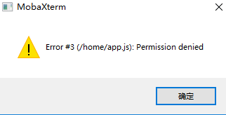

服务器搭建
目标： 使得自己的服务器能够正常工作
step1.连接自己的服务器
注意： 关于怎么连接服务器和上传代码，都是异曲同工的。如果之前使用过“Putty”、“Xshell”和“WinSCP”等优秀的软件可以大略浏览一下下面的内容然后使用自己顺手的工具操作。如果从未听说这这些软件，不妨统统下载下来尝试一下，下载的注意事项参见下面的“小贴士”。
下载客户端
这里推荐使用MobaXterm虽然是英文界面，但是可以使用sftp进行文件管理，免去了上传文件的痛苦。
Tip 小贴士:将来应该会遇到大量的情况需要从一个纯英文的网页下载东西，因为大部分免费又好用的软件基本都是外国的。他们的软件可能有官方的中文翻译，但是他们的网站可能大部分都不是中文的。这时候千万不要贪图省事而选择国内的的软件站下载，尤其是这种涉及服务器安全的软件，最好直接从官网下载。如果觉得英文阅读实在是障碍，请选择浏览器对应的翻译插件进行使用。
安装
绿色版:
如果选择了绿色版（Portable），那么解压之后就可以直接使用了。
安装版
如果选择了安装版（Installer），那么在安装的过程之中最好保持默认值，除非知道自己在干什么。
运行
然后点击左上角的“Session”就可以创建一个连接了。
下面的教程面向Ubuntu/Debian系统
如果不是请去腾讯云进行重装，或者自行替换相关包管理指令为所用系统/或者选择从源码编译所需要的软件。
打开session之后会看到上面有一排的图标。他们都分别对应的一种连接方式。有兴趣的同学可以分别百度一下了解一下他们都是干什么用的。
这里用到的则是SSH。
Tip 什么是SSH: Secure Shell - Wikipedia
ps: 需要中文请自行选择中文(如果打不开就是的问题了)
pps：如果以后还想问出类似的问题，请自行必应/谷歌/维基百科。如果前面这三个都不知道，那就请使用百度。
选择SSH之后下面就会弹出需要配置的内容。这里需要配置的有：
- Remote host : 远程服务器名称，可以使用的服务器外网IP或者能够解析到这台服务器的域名。
- Specify username : 指定用户名 指定用来登录远程服务器的用户名。在创建服务器的时候会告诉的，或者是自己设置的。
- Port : 端口 远程的SSH-server监听的端口，通过这个端口，可以和远程服务器进行通信。之后可以自定义，默认使用的是22端口。
这个软件非常强大，自己可以摸索（百度）一下如何使用。
点击“OK”就可以创建连接了。按照要求输入用户名和密码，回车就可以了。
Q&A
Q: 为什么输入不了密码？
A: 在Unix系统中，默认输入密码是没有占位符的，确定自己输对了就直接回车就好了，如果觉得输入有误，请疯狂删除后重新输入。
之后就可以愉快的进行系统配置了！
step2.安装所有的软件
既然是命令行，那么所有的操作都可以通过命令行完成。
更新软件库
$ sudo apt update
tip: 通常教程或者书本在写命令的时候都会在命令起那面添加一个$或者#。$代表是以普通的用户身份运行，#代表使用管理员权限运行。后面的内容才是命令本身，如果粘贴的时候带上$会报错呦。
安装一波软件
$ sudo apt install vim git curl wget htop unzip tree nginx mongodb nodejs npm -y
然后就是漫长的安装过程，这个时候可以研究一下这都是什么东西。
- vim ： 大名鼎鼎的文本编辑器，什么没听说过，那就是因为他生活在命令行次元，和可视化的不是一个次元，到底有多又名呢？可以去必应/知乎一下。暂时可以用它在服务器上临时编辑一些文本，方便的很。
- git ： 非常好用的，全世界通用的代码管理软件，相信不会不知道吧。
- curl ： 用来发送http请求的工具，用它来调试网络api再好不过了。
- wget ： 基本上同上，但是倾向于把文件下载下来。
- unzip : 用来解压文件的工具
- htop ： linux的任务管理器，可以看看现在有什么程序正在运行。
- nginx ： 主角--nginx服务
- mongodb ： 亲爱的数据库
- nodejs ：不用再介绍了吧
- npm : 非常好用的包管理器，配合node食用味道更加
Note: npm包管理存在一定的问题，FaceBook针对这些问题开发了yarn，如果有需要可以自行百度尝试。

step3.上传代码
！！打开service/config/index.js，填写自己的微信小程序appid和secretKey。！！
建议各位在操作什么路径的时候，先了解一下这个路径的意义，再瞎搞可就真的凉了。
- /bin 二进制可执行命令
- /dev 设备特殊文件
- /etc 系统管理和配置文件
- /etc/rc.d 启动的配置文件和脚本
- /home 用户主目录的基点，比如用户user的主目录就是/home/user，可以用~user表示
- /lib 标准程序设计库，又叫动态链接共享库，作用类似windows里的.dll文件
- /sbin 系统管理命令，这里存放的是系统管理员使用的管理程序
- /tmp 公用的临时文件存储点
- /root 系统管理员的主目录（呵呵，特权阶级）
- /mnt 系统提供这个目录是让用户临时挂载其他的文件系统。
- /lost+found 这个目录平时是空的，系统非正常关机而留下“无家可归”的文件（windows下叫什么.chk）就在这里
- /proc 虚拟的目录，是系统内存的映射。可直接访问这个目录来获取系统信息。
- /var 某些大文件的溢出区，比方说各种服务的日志文件
- /usr 最庞大的目录，要用到的应用程序和文件几乎都在这个目录。其中包含：
- /usr/X11R6 存放X window的目录
- /usr/bin 众多的应用程序
- /usr/sbin 超级用户的一些管理程序
- /usr/doc linux文档
- /usr/include linux下开发和编译应用程序所需要的头文件
- /usr/lib 常用的动态链接库和软件包的配置文件
- /usr/man 帮助文档
- /usr/src 源代码，linux内核的源代码就放在/usr/src/linux里
- /usr/local/bin 本地增加的命令
- /usr/local/lib 本地增加的库
虽然看着多，到时候用到了再来查。
Q&A
Q: 不知道自己在什么路径怎么办呢？
A: 一般有两种办法
- bash这个shell里的命令提示符中可以知道
ubuntu@767dec3975a5:~$这就是一个bash的命令提示符，用来提醒可以输入新的命令。它由几部分组成。
用户名@主机名:当前路径$。~是一个环境变量HOME的缩写，一般用户的HOME都指向/home/用户名。关于www的路径就是
/var/www。熟练的使用cd和ls（类似于windows的dir）命令可以让你知道“我是谁”，“我在哪”，“我在干什么”的哲学三问。
- 使用
pwd命令，直接输出当前所在的绝对路径。
Tip:
cd:后面直接跟路径就是了，linux下面没有盘符的概念，所以想去哪里就直接一个cd过去。路径分为绝对路径和相对路径。
- “绝对路径”： 就是指向位置不随当前位置以及调用环境改变而改变的路径，一般上是
/开头，从根目录开始一直到所需要的位置的完整路径。- “相对路径”： 不同于绝对路径，相对路径是再当前位置或者环境变量的基础上进行索引的。
在每个路径下面都会两特殊的文件
.和..
- “.”： 指向当前路径
- “..”： 指向上级路径
ls: 列出当前目录的文件列表。常用参数：
- -l : 略出详细信息，包括大小 所有者 所有用户组 权限设置
- -a : 列出所有文件，包括上面提到的两个特殊文件。以及隐藏文件
这两个命令可以自己尝试一下，这都是读取的命令，不同担心造成什么损坏，到处转转看看不同的路径里面有什么文件，
了解的差不多就可以开始上传代码了。
PS：当然上传代码的方式可谓是八仙过海各显神通了。下面简单描述一下几种方式，然后详细介绍一种方式。
- 利用git： 首先将自己的代码传到远程的git仓库（githua、gitlab等等）然后使用刚才安装的git工具clone下来。
- 利用网盘： 可以在自己的服务器上面建一个网盘，然后直接通过网站上传。
- 利用复制粘贴： 也可以把所有代码一个一个文件复制过去，当然，这需要一定的耐心。
- 使用sftp上传（详细）：使用ssh自带的sftp上传文件。
这里详细的来讲讲第4种方式。
当然想必各位应该已经看到了左边这个目录，双击..就可以到上一个目录，或者直接在上面的路径框输入想去的路径回车就可以到了（类似于cd）。然后直接显示在这里相当于ls。
先将需要上传的代码修改好，然后打包成一个.zip格式的zip压缩包直接拖拽到空白的地方就可以上传了就可以进行上传。
当然，作为一个普通用户，做好的存放地点当然是自己的“HOME”(样例中就是/home/ubuntu)
如果传不上去

这就是传错了地方。
思考：为什么需要打包之后再上传呢？为什么不直接拖拽文件夹呢？（好奇可以试一试）
然后对这个压缩包进行解压。
$ unzip server.zip
请自己替换需要解压的文件文件名，如果觉得自己一个一个字符输入十分费劲，也可以试一试Tab补全。只输入文件名的一部分然后按一下Tab就会发现文件名自己补全了。当然如果不会自动补全有可能是因为根本不存在这个开头的文件，或者是以这个开头的文件不止一个，后者再按一下tab会在下面列出所有可能的结果，当然不能太多。
然后进入到这个文件夹里安装所需要的依赖
$ npm i
PS: i 就是install参数的简写，平时也可以用，程序员可是非常懒的，常用的命令字符能少一个是一个。
然后运行
$ node app.js
没有看到什么报错信息就是成功运行了。
step4.申请HTTPS证书
最为HTTPS加密的最重要的一点就是证书啦，相关的信任链，证书链，非对称加密等可以说是信息安全发展的丰硕成果，虽然平时不知道，但是它们却在时时刻刻保护的安全。
证书的类型有很多，这里就申请一个免费的DV证书---Let’s Encrypt。
配置域名解析
freenom用户需要改NameServer
PS: 腾讯云域名注册用户跳过这一步！！！
首先打开百度->搜索: 使用dnspod解析freenom
然后找一个靠谱的文章，例如：使用DNSPod解析Freenom域名 - ssooking - 博客园
跟着一步一步走，由于dnspod就是腾讯家的，直接用腾讯云账号直接登陆就好了，然后就可以跟在腾讯云卖域名的小伙伴一起玩耍了。
DnsPod解析
打开 Dnspod官网，使用登陆腾讯云的账号登陆。
点击左边的“域名解析”，就可以看见自己的域名了。
点击域名，就可以进入解析管理的页面。
在对应的位置填写对应的信息保存即可。
然后就会发现他在下面产生了。主机记录，比如用的就是www，那么一会的域名就是www.xice.wang。如果是cn，那么就是cn.xice.wang，以此类推。
这样子解析就完成了，想测试一下的可以使用cmd自带的工具nslookup进行尝试。
Win + R 打开运行，输入 cmd ，回车
输入命令：
nslookup www.xice.wang
就可以看到结果了
获得ID 和 Tocken
在 用户中心 -> 安全设置 -> API Token 中开启设置并查看
安装 acme.sh
切换到root权限
$ sudo -i
下载签名工具 acme.sh
PS: cron 默认会随系统安装，但是作为acme.sh的重要依赖，还是手动确认一下安装情况，不装的话等提醒再来也来得及
# apt install cron
# curl https://get.acme.sh | sh
安装socat的方式可能也猜到了，就是
# apt install socat
当然，不装问题也不大，因为这里采用dns_api的申请证书的方式。
将上一步得到的ID 和 Tocken 找出来。一会准备用。
# vim ~/.acme.sh/dnsapi/dns_dp.sh
使用vim进行编辑。

关于vim更高级的使用方式请自行学习。
使用上下左右移动光标，到 #DP_Id="1234" 前面的这个井号上面，使用Del键取消注释（就是删掉这个井号。然后往后移动，删除1234，这一行仅仅留下 DP_Id=""，此时按 i 切换到插入模式（右下角显示一个 -- INSERT --）在两个引号之间输入ID，按ESC退出插入模式。
然后按照上面的步骤输入Tocken。
Tocken太长了，不想一个一个输入怎么办？研究一下这个界面，怎么复制粘贴。
全部修改完毕之后点击ESC退出插入模式并保存
输入一个 : (就是一个冒号) 进入命令模式(左下角有一个冒号)
输入 q 回车 (q命令就是 保存并退出的意思。)
别的东西就自己探究一下吧。
回到命令行来申请证书
# ~/.acme.sh/acme.sh --issue -d www.xice.wang --ecc -k ec-384 --dns dns_dp
PS: 请替换命令中的域名为自己的域名
静静等待两分钟，这个工具会自动完成所有的事情。
然后就会看见一长串私钥和这些文件都保存在哪里。
免费的证书就得到了！
step5.配置nginx
nginx配置文件样例：
server {
listen 80;
server_name <域名>;
return 301 https://$server_name$request_uri;
}
server {
listen 443 ssl http2;
server_name <域名>;
# add_header Strict-Transport-Security "max-age=63072000; includeSubdomains; preload";
ssl_stapling on;
ssl_stapling_verify on;
resolver 223.5.5.5 223.6.6.6 valid=300s;
ssl_certificate /root/.acme.sh/<域名>_ecc/fullchain.cer;
ssl_certificate_key /root/.acme.sh/<域名>_ecc/<域名>.key;
ssl_protocols TLSv1.2;
ssl_ciphers "!aNULL:!eNULL:!EXPORT:!DES:!MD5:!PSK:!RC4";
ssl_prefer_server_ciphers on;
ssl_session_cache shared:SSL:10m;
ssl_verify_depth 3;
ssl_session_timeout 60m;
client_max_body_size 10M;
access_log /var/log/nginx/<域名>-access.log;
error_log /var/log/nginx/<域名>-error.log;
index index.html index.htm;
#add_header Strict-Transport-Security max-age=15768000;
root /var/www/html;
location / {
proxy_http_version 1.1;
proxy_set_header X-Real-IP $remote_addr;
proxy_set_header X-Forwarded-For $proxy_add_x_forwarded_for;
proxy_set_header Host $http_host;
proxy_set_header X-Nginx-Proxy true;
proxy_set_header Connection "";
proxy_pass http://127.0.0.1:3000;
proxy_redirect default;
proxy_read_timeout 60s;
}
}
使用之前上传代码的方式，上传nginx的配置文件，如果喜欢使用vim可以传上去之后再改。
把里面 所有的 <域名> 替换成 你的域名，例如我就是用 www.xice.wang 替换他们。

PS：这张截图申请证书的域名是 xice.wang， 请随机应变。
替换的几个地方包括：nginx 的ServerName和证书路径，还有输出的日志什么的。
确认没问题之后就可以把这个配置文件放在正确的位置上。
# mv /home/ubuntu/myfunction.conf /etc/nginx/sites-available/
此时又学了一个新命令mv就是把前面这个文件移动到后面这里，类似于剪切。如果后面是一个目录则会在这个目录下生成同源文件名的文件，如果后面是一个文件，则会直接覆写。使用请慎重。
前面的位置因人而异，配置文件上传在哪里就在那里。
当然可以切换到这个nginx的配置文件下面看个究竟：
# cd /etc/nginx
# ls
conf.d koi-win nginx.conf sites-enabled
fastcgi.conf mime.types proxy_params snippets
fastcgi_params modules-available scgi_params uwsgi_params
koi-utf modules-enabled sites-available win-utf
这里还需要把这个配置文件放置在sites-enbaled中才会生效，为了避免复制之后文件更改难以同步，所以应该在sites-enabled中创建一个“快捷方式”(符号链接)。为什么不直接放到enable中呢？因为有时需要暂时关闭某网站，但是又不想彻底删除这个配置文件，所以采用这种方式就可以只删除符号链接就可以了。
# ln -s /etc/nginx/sites-available/myfunction.conf /etc/nginx/sites-enabled/
创建符号链接，注意，源文件一定要写绝对路径，除非一些特别情况，具体情况就可以自行探索和理解，结合相对路径和绝对路径的知识。
然后检测一下配置是否存在问题
# nginx -t
应该没有问题，有的话就自己更改吧(:
使用
# systemctl reload nginx.ervice
使得 nginx 重新加载配置文件。
step6.运行mongoose后台web管理 (非必须)
这里单纯的给出一个连接mongo可视化工具adminMongo安装
有兴趣的可以尝试自己运行一下，然后自行查阅相关信息，配置nginx反向代理什么的。祝好运！
小声比比： 趁着现在服务器上没什么东西，重装起来没什么包袱，大胆折腾！不行重装！